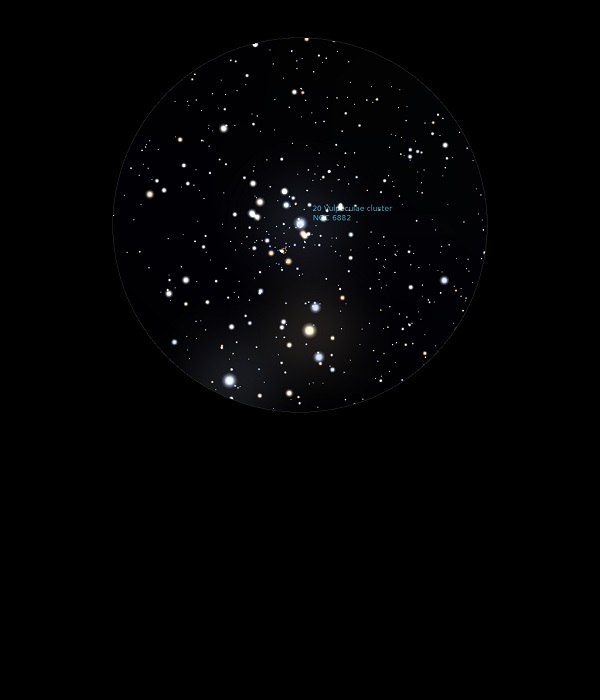

NGC 6885
Open Cluster in Vulpecular
NGC 6885
Mag 5.7
Caldwell 37, 20 Vulpeculae Cluster
31/08/13
Open Cluster, quiet bright, surrounds NGC 6882 which contains
less bright stars
09/09/15
A small in star number and rather sparse Open Cluster
filling perhaps a quarter of the FOV in 25mm
However, rather neat that 20 Vul, HIP 99531 at Mag 5.90 sits
in the centre
A very blue star, it is in marked contrast to 19 Vul,
HIP 99518 at Mag 5.50 which is very yellow
19 Vul and 18 Vul are both in the same 25mm FOV
18 Vul, HIP 99404 is the same Mag as 20 Vul but is even bluer
than 20 Vul
All in all a really interesting FOV
10/09/15
Small but a delight with it's blue central star, 20 Vul, HIP
99531 at Mag 5.90
Within the same FOV in 25mm and 12mm is the smaller Open
Cluster NGC 6882
31/08/16
Large and bright but
rather ragged Open Cluster in which also sits NGC 6882
at Mag 8.10 and appears to be further away